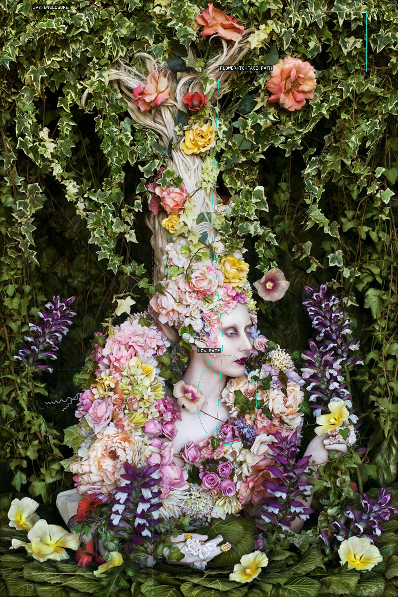
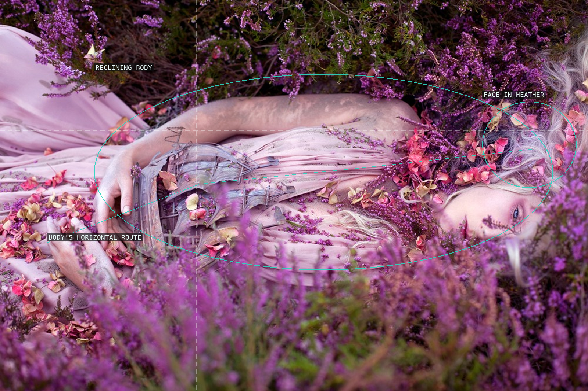
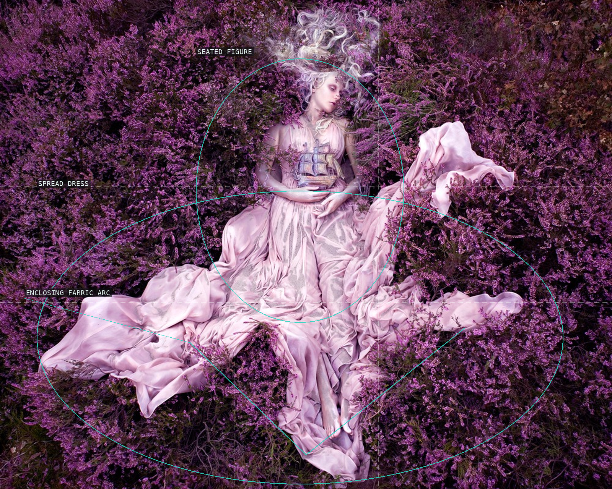
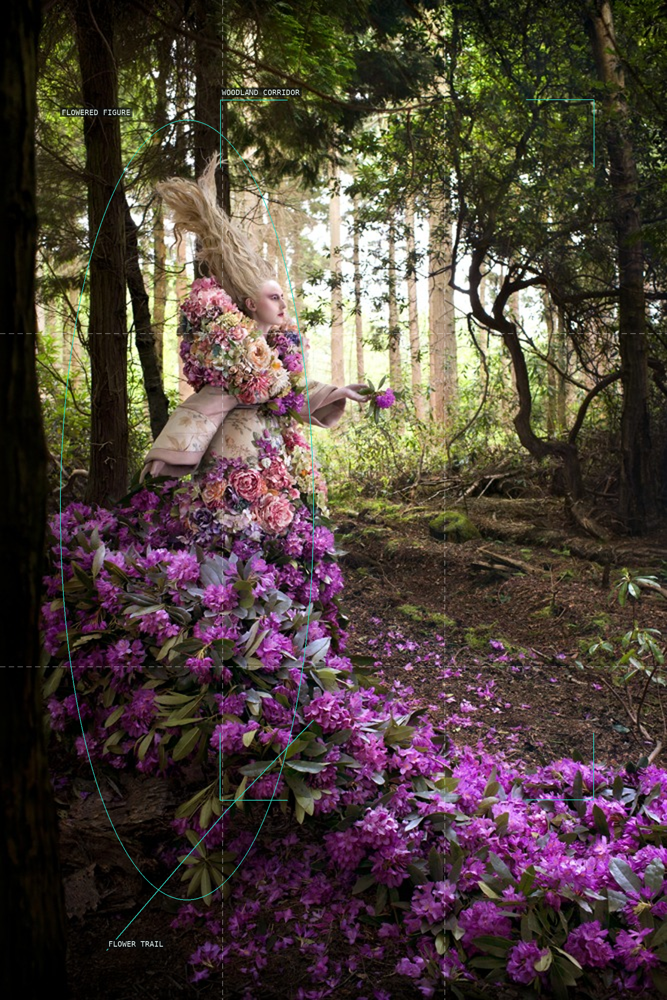
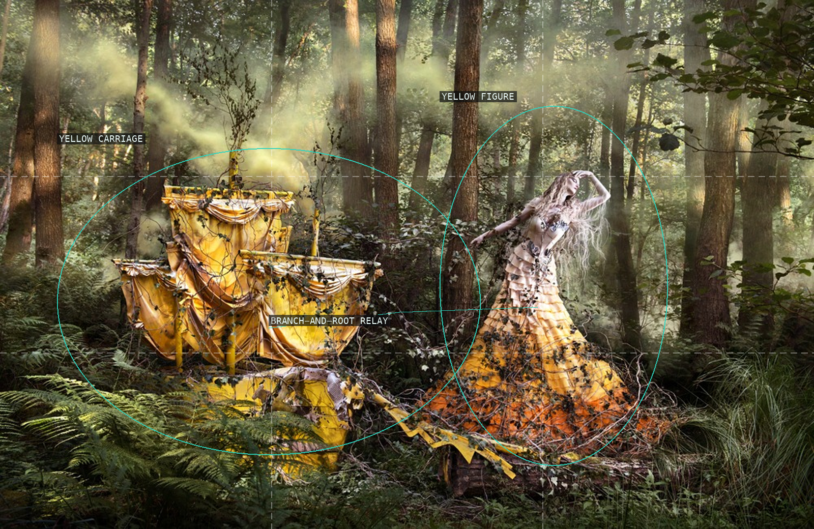
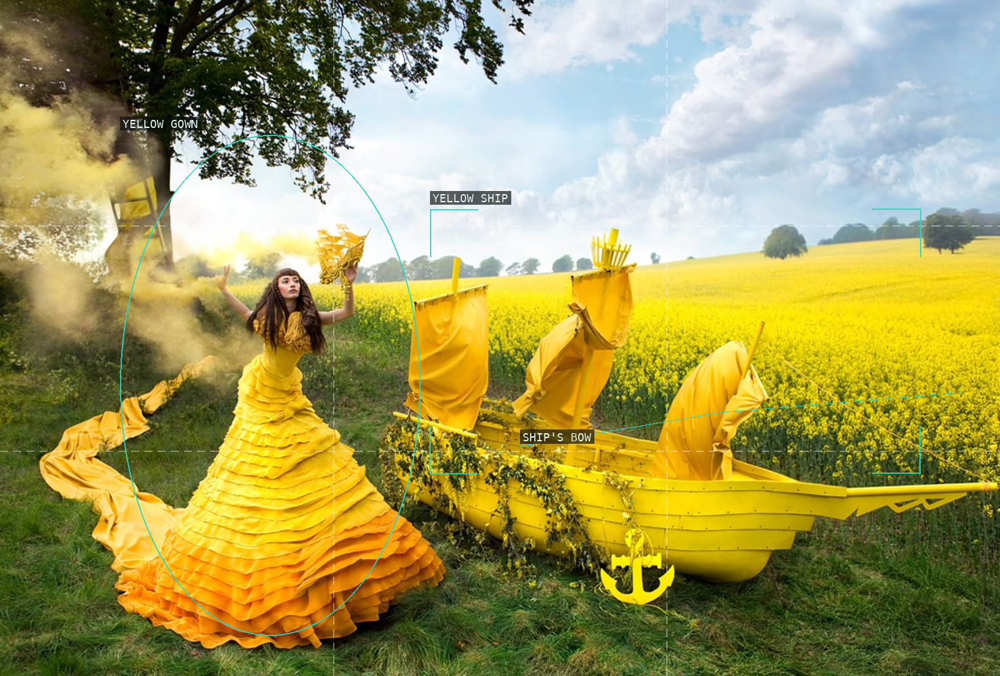
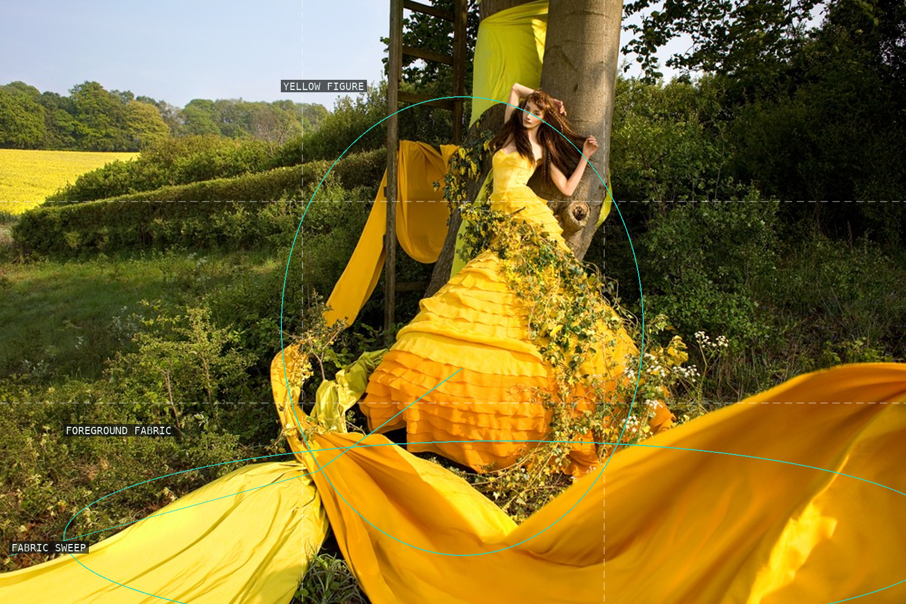
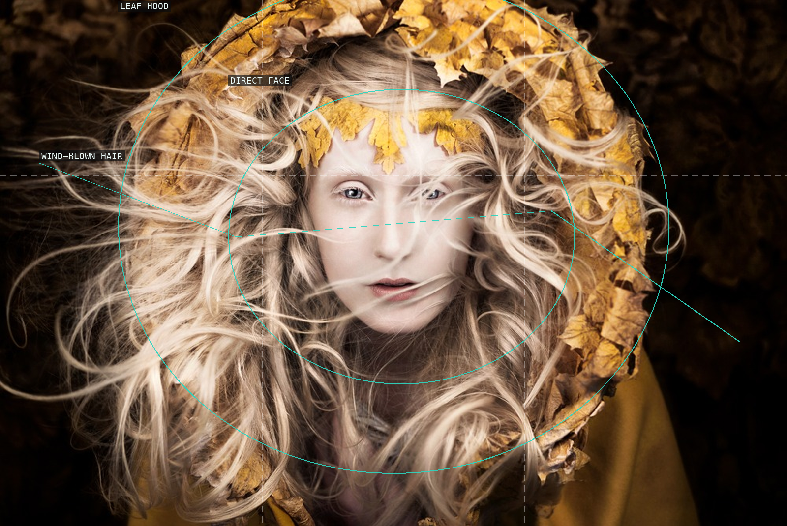
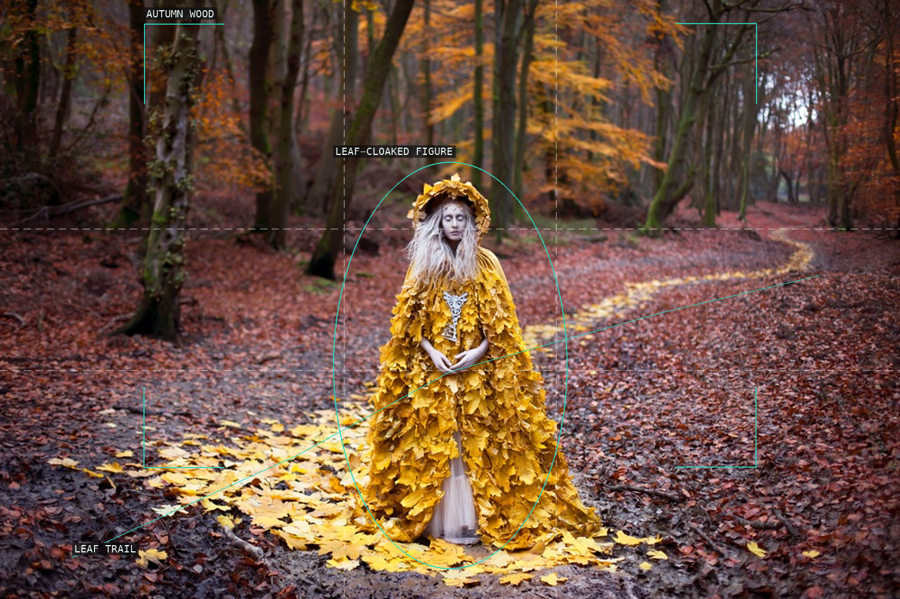
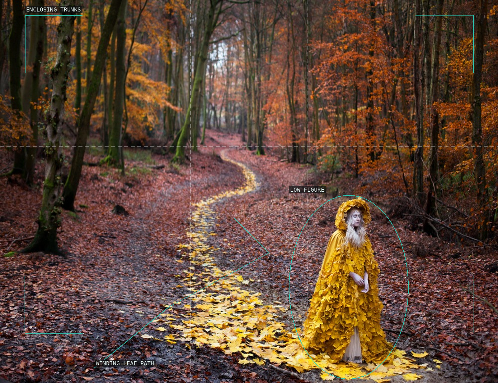

Kirsty Mitchell — overlay proofs

01 — The Secret Locked in the Roots of a Kingdom (2014)

02 — Gammelyn’s Daughter a Waking Dream (2012)

03 — Gammelyn’s Daughter (2012)

04 — The Last Dance of the Flowers (2014)

05 — She’ll Wait For You in the Shadows of Summer (2013)
06 — The Pure Blood of a Blossom (2014)

07 — Gaia’s Spell (2013)

08 — The Arrival of Gaia (2013)

09 — Let Your Heart Be The Map (2013)

10 — The Guidance of Stray Souls (2013)

11 — The Journey Home (2013)